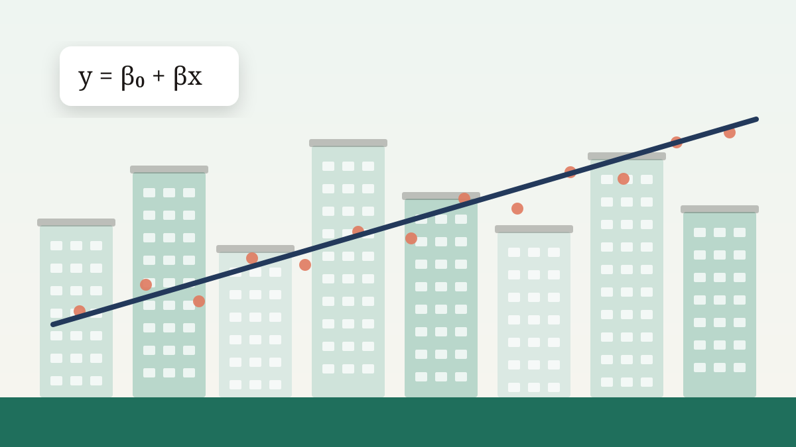

HDB Resale Price Regression Model
A statistically rigorous linear model of Singapore HDB resale prices that explains 88.6% of price variation.
- My role
- Individual project
- Team
- Individual (ST3131 Regression Analysis, NUS)
- When
- Apr 2026

Overview
The goal was to build the best linear regression model for HDB resale prices that also satisfies the standard regression assumptions, so its coefficients can be trusted and interpreted. The data covers 2,456 resale transactions from July 2020 (data.gov.sg).
The process at a glance
-
Data
- 2,456 resale flats (July 2020)
- 11 variables
-
Explore
- Right-skewed prices (skew 1.04)
- Town and flat-type boxplots
- Collinearity check
-
Engineer
- Remaining lease in years
- Storey midpoint
- Merge sparse flat types
-
Model
- Baseline M₀
- Box-Cox: λ = −0.38
- Log model chosen
- Stepwise AIC
-
Check
- Residual diagnostics
- VIF
- Cook's distance
-
Interpret
- % price effect per variable
- Town premiums and discounts
What I did
- Explored the price distribution (right-skewed, skewness 1.04) and engineered features: remaining lease in decimal years, storey midpoints and flat age.
- Found perfect multicollinearity between remaining lease, flat age and lease start date (|r| = 0.9993) and kept only one of them.
- Fitted a baseline model, then used Box-Cox analysis (optimal λ = −0.38) to compare log and reciprocal square-root transformations, choosing the log for interpretability.
- Ran stepwise AIC selection, VIF checks, influence diagnostics (Cook's distance) and full residual checks for normality, constant variance, linearity and independence.
- Interpreted every coefficient as a percentage price effect.
Results & conclusions
- Adjusted R² of 0.886, up from 0.841 for the untransformed baseline
- Average prediction error (MAPE) of 8.62%
- All key regression assumptions checked; no highly influential points (max Cook's D = 0.089)
| Model | Response | Adjusted R² | AIC | Shapiro-Wilk W |
|---|---|---|---|---|
| M₀ (baseline) | price | 0.8405 | 61,118 | 0.9607 |
| M₀ log (chosen) | log(price) | 0.8858 | −3,686 | 0.9764 |
| M₀ Box-Cox | 1/√price | 0.8922 | −38,949 | 0.9788 |
The Box-Cox model fit marginally better, but its coefficients can't be read as price effects, so I chose the log model.
| Factor | Effect on resale price |
|---|---|
| Floor area | +0.89% per extra square metre |
| Storey | +0.83% per floor higher |
| Remaining lease | +1.24% per extra year |
| Executive vs 1-room flat | +46.2% |
| 4-room vs 1-room flat | +37.8% |
| Central Area vs Ang Mo Kio | +43.4% |
| Sembawang vs Ang Mo Kio | −32.8% |
Each effect holds the other factors constant.
Conclusion
The final log-linear model explains 88.6% of the variation in resale prices and predicts within 8.62% on average. It satisfies the key assumptions: residuals are approximately normal with constant variance, relationships are linear, and multicollinearity is under control. The only caveat is mild autocorrelation (Durbin-Watson 1.28), which is expected because nearby towns move together. The results match Singapore's familiar price gradient: central and southern towns command large premiums while northern and western towns are more affordable.

What I learnt
This project taught me that a good regression model is one you can defend, not just the one with the highest R². Box-Cox pointed to a transformation that fit slightly better, but I chose the log because its coefficients translate directly into percentage price effects people can use. I learnt the full adequacy-checking routine (residual plots, normality and independence tests, VIF and Cook's distance) and how to justify decisions such as dropping perfectly collinear variables. Compared with my first-year HDB project, it showed me the difference between predicting well and explaining why.